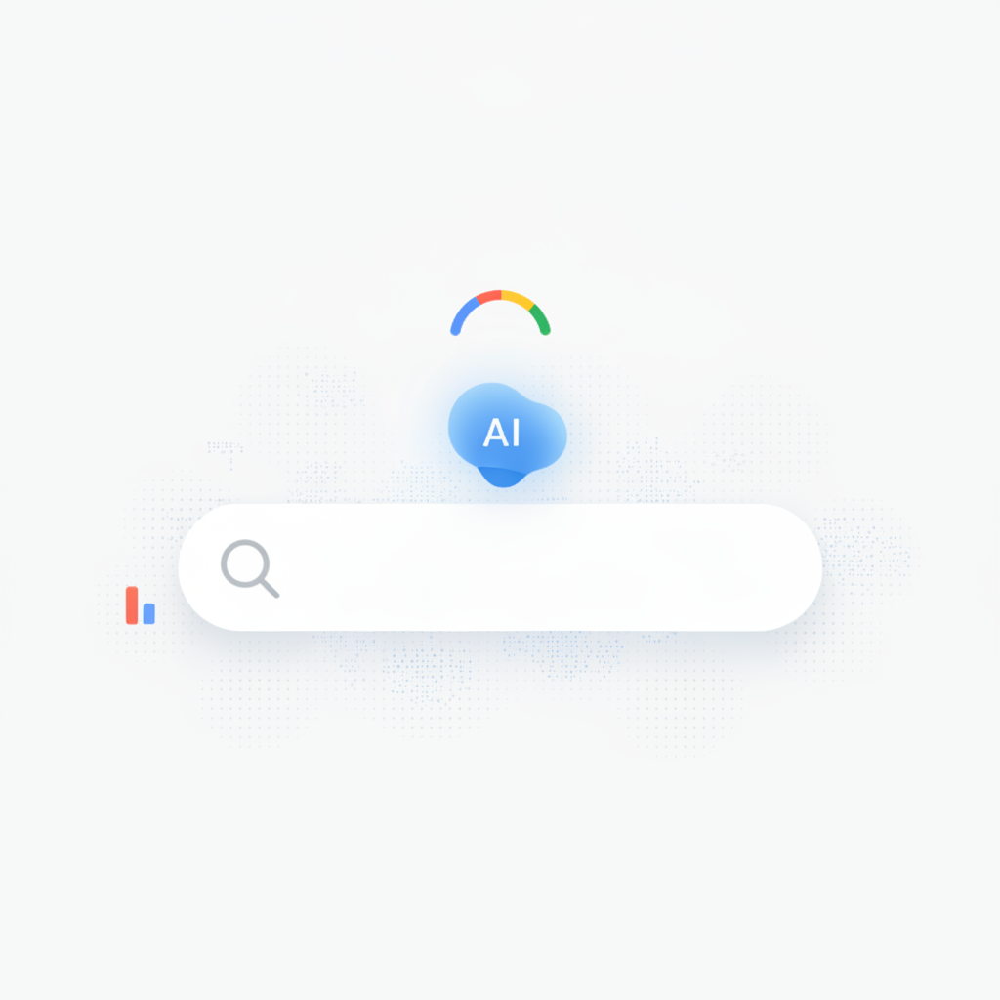
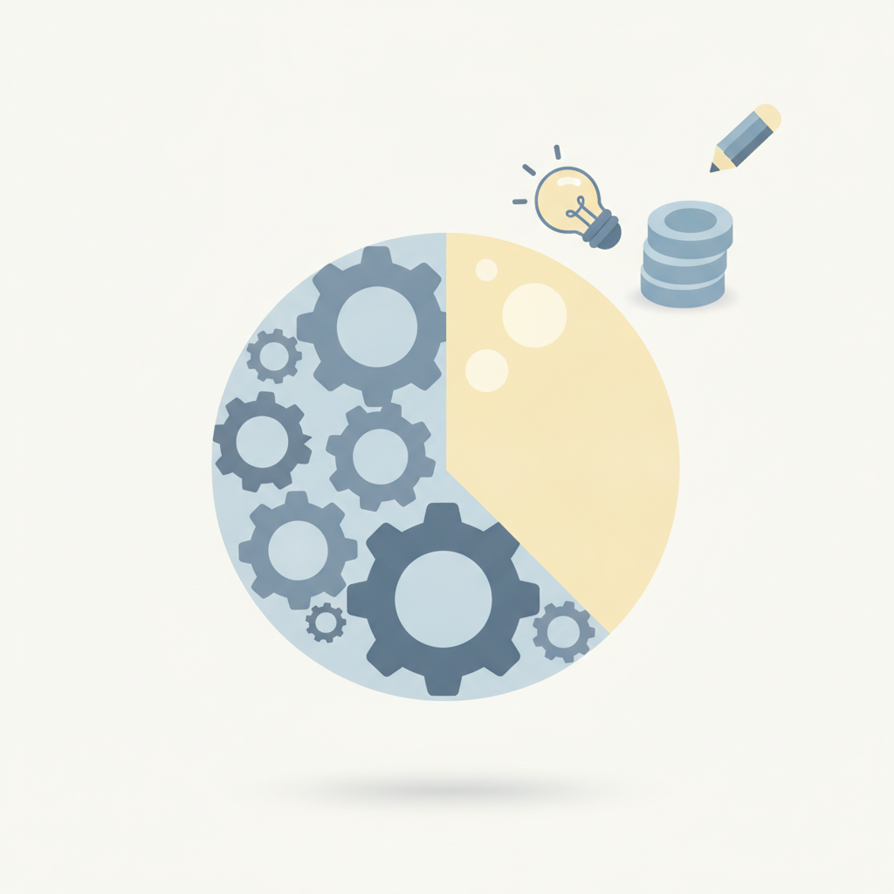
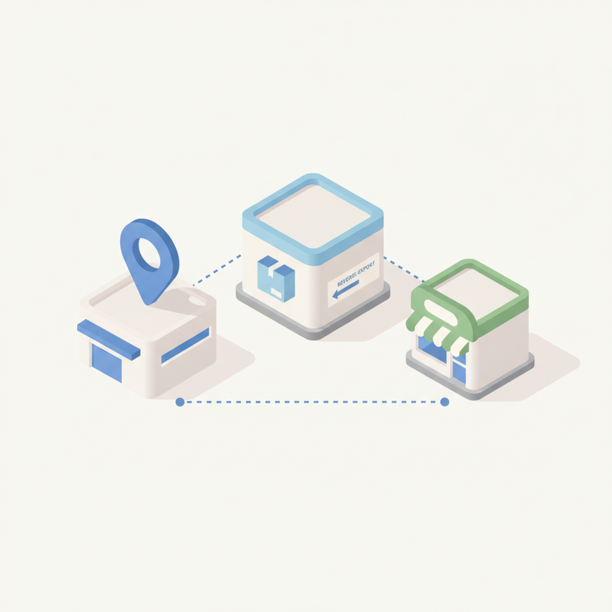
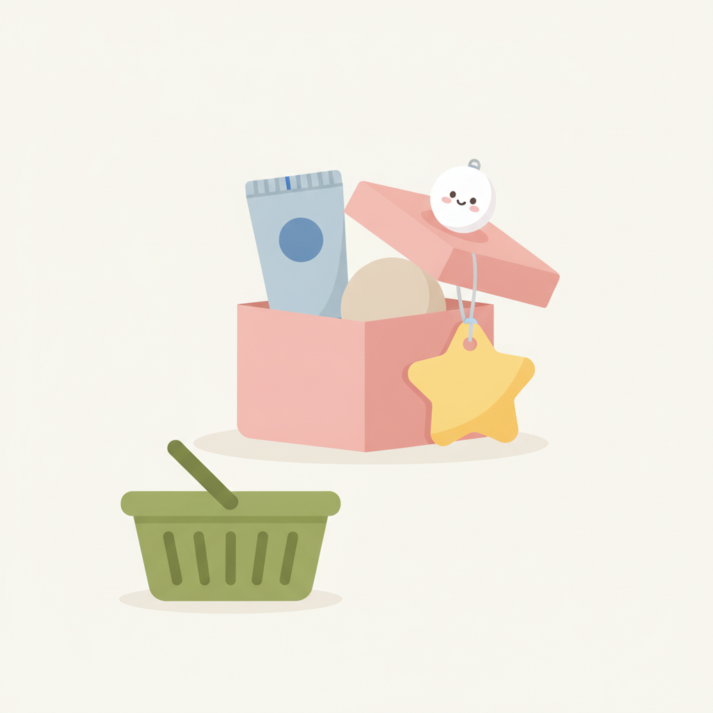
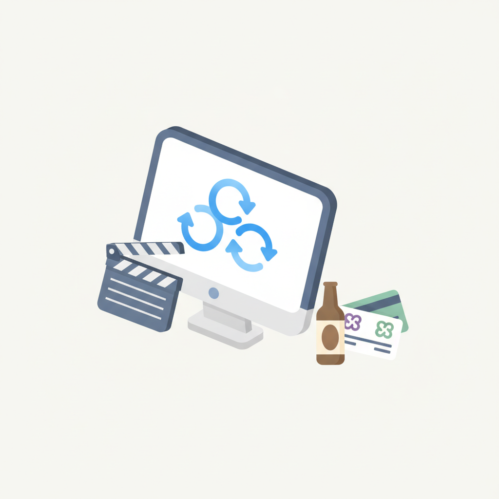
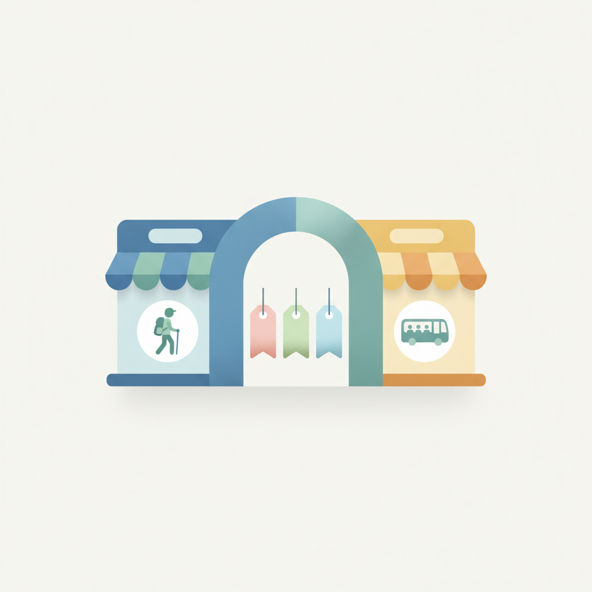
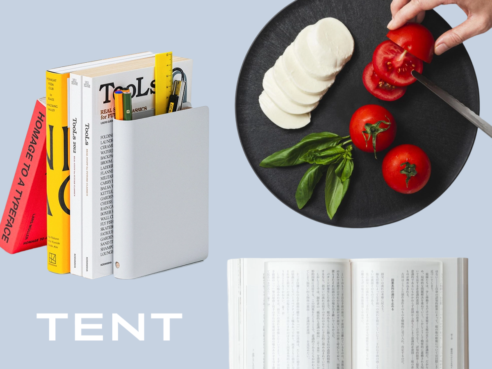

안녕하세요! 수요일 마케팅 소식 전해드립니다 😊 오늘은 롱블랙에서 다룬 TENT의 이야기가 인상적입니다. "센스에 기대지 말고 우선순위를 설계하라"는 메시지처럼, 좋은 결과물은 감각이 아니라 구조에서 나온다는 점을 다시 짚어줍니다. 오늘 빌더조쉬 소식도 함께 전해드립니다. YC 디자인 총괄 이브 부파르가 타이핑 대신 말로 디자인하며 Paxel, SOTA, Startup School 2026을 만들어낸 작업 방식은 AI 시대의 창작 루틴이 어떻게 달라지고 있는지를 구체적으로 보여줍니다.
마케팅 현장에서도 AI를 둘러싼 흥미로운 긴장감이 이어지고 있습니다. 미국 광고회사 90%가 생성형 AI를 활용하고 있지만, 실제 목적은 비용 절감과 생산성에 집중돼 있고 창의성은 오히려 뒤로 밀리고 있다는 포레스터 보고서가 나왔습니다. 반면 베이커스의 윤병선 CCO는 좋은 AI 광고의 핵심은 모델 선택이 아니라 브랜드 문제를 어떻게 해석하고 무엇을 선택하느냐에 있다고 말합니다. 도구보다 판단력이 먼저라는 점에서, TENT의 메시지와도 맞닿아 있습니다.
한 주의 중반, 오늘 소식들이 실무에 작은 인사이트가 되길 바랍니다! 🙌

1AI 검색 분석 플랫폼 피크 AI가 50만 개 검색 프롬프트를 분석한 결과, 구글 AI 오버뷰는 조사 대상 검색의 86.7%에 노출됐으며 2025년 4월 56.9%에서 급증했다. 업계 논의는 챗GPT·퍼플렉시티에 집중되어 있지만, 실제 이용자 규모 면에서 브랜드가 가장 먼저 대응해야 할 AI 검색 채널은 구글 AI 오버뷰라는 분석이다. 마케터는 SEO 전략을 AI 오버뷰 노출 최적화(GEO)까지 확장해야 할 시점이다.
›
2포레스터가 미국광고협회(4As)와 공동 발표한 보고서에 따르면 미국 광고회사 90%가 생성형 AI를 활용하고 있으나, 목적은 비용 절감·생산성 향상에 편중된 것으로 나타났다. 효율 중심의 AI 활용이 창의성과 브랜드 경쟁력을 약화시킬 수 있다는 경고가 함께 제기됐다. 국내 마케터도 AI 도입 목적을 효율을 넘어 크리에이티브 차별화로 확장하는 전략적 재검토가 필요하다.
›
3쿠팡은 대만에 4번째 물류센터를 열고 국내 중소상공인 1만 곳 이상을 현지에 연결했으며, 컬리는 미국 역직구 서비스 '컬리USA'를 론칭했다. CJ올리브영은 미국 서부에 전용 물류센터와 오프라인 매장 2곳을 운영하며 현지화에 나서고 있다. 플랫폼별로 물류 이식, 역직구, 오프라인 거점 등 글로벌 확장 전략이 다양화되고 있어, 입점 브랜드 및 파트너사 마케터에게도 해외 진출 경로 검토가 현실적 과제가 됐다.
›
4올리브영 매장과 앱 메인을 산리오·포켓몬스터 등 글로벌 메가 IP 콜라보 기획 세트가 장악하며, '화장품을 사니 캐릭터가 따라오는' 구조에서 '캐릭터를 사니 화장품이 따라오는' 구조로 역전됐다. 강력한 팬덤을 보유한 IP는 소비자의 구매 망설임을 제거하는 즉각적 전환 트리거로 기능한다. 브랜드 마케터는 IP 콜라보를 단순 한정판 이벤트가 아닌 신규 고객 유입과 객단가 제고 수단으로 설계할 필요가 있다.
›
5AI 크리에이티브 그룹 베이커스의 윤병선 CCO는 좋은 AI 광고의 핵심은 모델 선택이 아니라 브랜드 문제 해석과 생성 결과물 중 무엇을 선택하느냐에 있다고 강조했다. 베이커스는 AWW·테라·신세계포인트 캠페인에서 AI를 공정 단축 도구가 아닌 아이디어와 제작이 반복적으로 진화하는 새로운 크리에이티브 방식으로 적용했다. AI 광고 도입을 검토하는 마케터라면 툴 선정보다 브랜드 문제 정의 역량이 선행 조건임을 시사한다.
› 6KPR 인사이트연구소가 온라인 빅데이터를 분석한 결과, 위고비·삭센다 등 GLP-1 계열 비만치료제 확산을 계기로 소비자의 체중 관리 방식이 단기 감량 중심에서 지속 가능한 건강 루틴 중심으로 이동하고 있다. 비만이 의지의 문제가 아닌 의학적 치료 대상으로 재정의되면서 다이어트 시장이 구조적으로 재편되는 중이다. 헬스·뷰티·식품 마케터는 제품 메시지를 '빠른 감량'보다 '지속 가능한 루틴'으로 전환하는 전략을 검토할 필요가 있다.
›
7마이리얼트립·놀유니버스·여기어때 등 자유여행 기반 플랫폼들이 일제히 패키지 상품 확대에 나서며 여행 플랫폼과 전통 여행사 간 경계가 허물어지고 있다. 비용 부담 속에서도 여행 수요는 견조하지만 소비자들이 가격과 혜택을 꼼꼼히 비교하는 경향이 강해지면서 플랫폼들이 안정성과 편의성을 무기로 한 패키지 상품으로 영역을 확장하는 것으로 분석된다. 여행 관련 마케터는 자유여행·패키지 이분법을 넘어 유연한 상품 구성과 가격 경쟁력을 동시에 고려해야 할 시점이다.
›YC 디자인 총괄 이브 부파르가 Paxel, SOTA, Startup School 2026을 만든 방법

솔직히 고백할게요. 저는 가끔 접시 위에 칼을 대고 과일을 잘라요. 사과 하나 깎으려고 도마를 꺼내는 게 너무 귀찮거든요.이렇게 우리는 ‘익숙한 불편함’을 많이 참고 살아요.
아티클 읽기 →브랜드 진단부터 지금 당장 해야 할 우선순위까지,
30분 무료 상담에서 함께 정리해드려요.
이미 수십 개 브랜드가 상담받았습니다.
내 브랜드처럼, 함께 고민하는 팀원의 마음으로 봅니다.
스타트업 대표·마케팅 담당자를 위한 30분